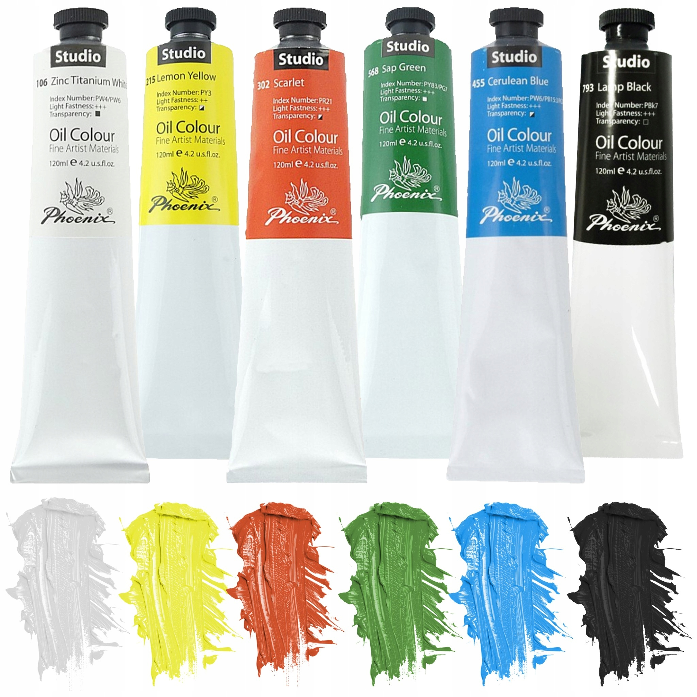

Olejové farby

Biela
Laik by povedal že existuje len jeden druh bielej, no opak je však pravdou.
oranžová
Táto zdanlivo oranžova farba sa ulemcami casto nazýva inými menami, napríklad okrová, alebo scarlet.
Riedidlo
Na prácu s olejovými farbami je potrebné mať správne riedidlo, aby sme mohli dostat tu správnu konzistenciu.
Text pod obrázkom, aby bolo vidieť, čo sa deje s obsahom pod ním.